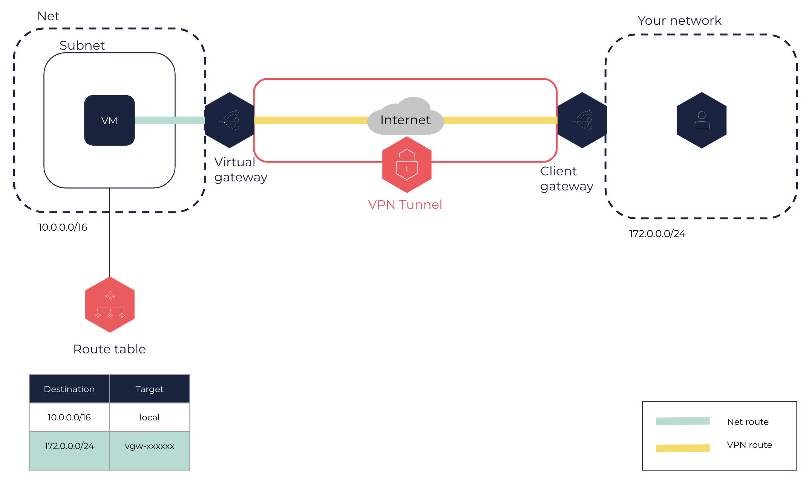
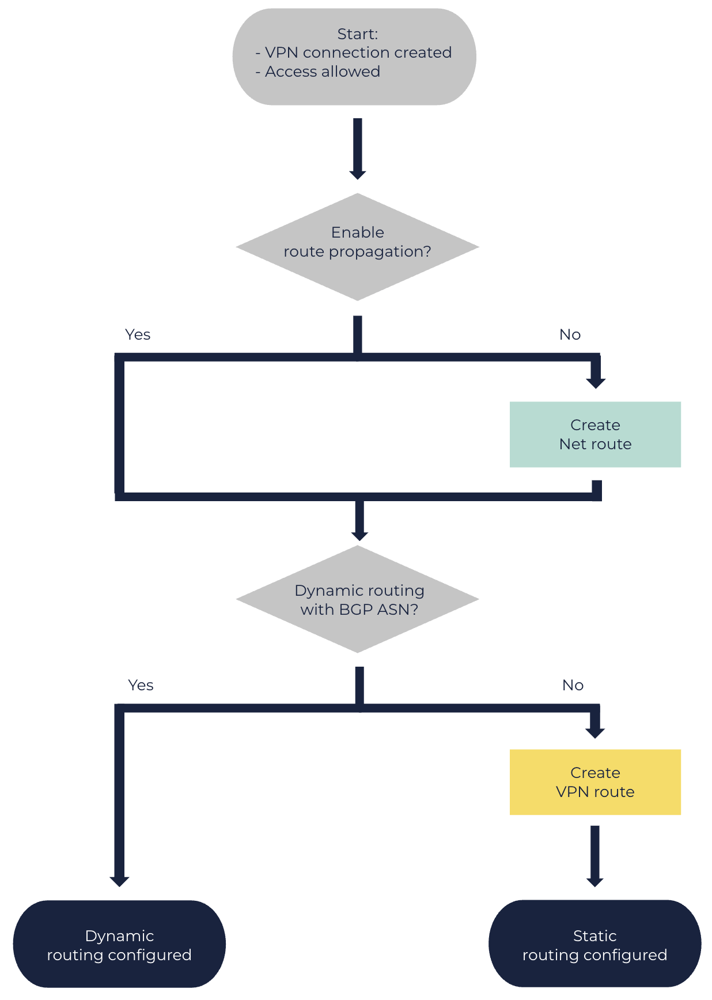

About Routing Configuration for VPN Connections
A VPN connection relies on two types of routes that you need to configure, between your corporate network and one of your Nets in the OUTSCALE Cloud.
Route Types
A VPN connection relies on two types of routes:
-
Net routes: traffic inside the Net, between the virtual machines (VMs) and the virtual gateway. To get information about these routes, see Getting Information About Your Route Tables.
-
VPN routes: traffic inside the VPN tunnel, between the virtual gateway and the client gateway. To get information about these routes, see Getting Information About Your VPN Connections.
Both types of routes use the CIDR of your corporate network as destination, and the ID of the virtual gateway as target.

Static and Dynamic Routing
To enable VMs in your Net to reach the client gateway, you must specify the type of routing for the VPN connection, and update the route table in the Subnet of the Net accordingly:
-
For static routing, you need to create new VPN routes. For more information, see Creating a VPN Connection Route.
-
For dynamic routing, you do not need to create VPN routes. However, you must use devices that support the Border Gateway Protocol (BGP). For more information, see the BGP ASN section below.
|
Configuration

Route Propagation
You can enable route propagation to a route table associated with a Subnet of the Net. This action automatically updates the route table to include routes from the Net pointing to the virtual gateway. Route propagation is not mandatory, and works for both static and dynamic routing. You can use a default or custom route table. For more information, see Enabling Route Propagation.
Otherwise, you need to manually update the route table with each route. For more information, see Creating a Route.
BGP ASN
The Border Gateway Protocol (BGP) is a dynamic routing protocol that relies on Autonomous System Numbers (ASN). In a VPN connection using BGP, the client gateway advertises an ASN to help the virtual gateway find a path to it through the internet.
To use BGP, your resources must support dynamic routing. The BGP is not mandatory: you can choose static routing, even though your resources do support dynamic routing.
|
If you connect several client gateways in the same network with a single virtual gateway, these client gateways must all use the same BGP ASN. |
Otherwise, you need to create new VPN routes manually. For more information, see Creating a VPN Connection Route.
Related Pages